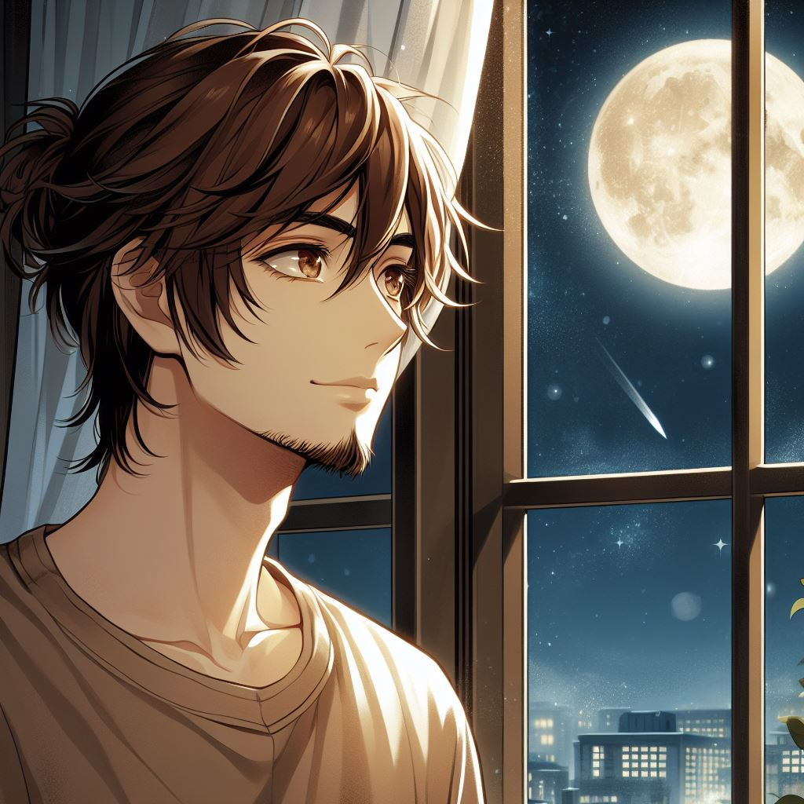

Meu AMOR!
Oeeeeeee, meu amor! Hoje é um dia especial pra mim, pra nós!... É a comemoração de um ano de nossa história, da história de amor mais linda que conheço, uma história que está só começando... Obrigado por me fazer a pessoa mais feliz desse mundo, por ser a pessoa que me apoia e cuida de mim, a única pessoa capaz de me fazer sorrir nos meus piores dias, a pessoa com quem sei que posso contar sempre, em qualquer situação. Eu te amo demais, meu amor.
É engraçado kkkk, eu escrever sobre você aqui minha bbzinha. Acho que é por conta que falo tudo pra você todos os dias e se torna pequeno aqui. Você é o amor da minha vida. A pessoa que eu agradeço a Deus por ter me dado a chance de conhecer. Meu amor, minha melhor amiga, minha família. Eu sempre vou estar com você, tô aqui sempre. Longe ou distante, não faz diferença nenhuma. Você consegue me fazer feliz mais e mais todos os dias. Obrigado por ser essa pessoa incrivel, você é muito mais do que eu sonhei um dia. Quero ver você conquistando tudo o que deseja, juntinho comigo é claro kkkk. Você é a melhor parte de mim, te amo imensamente minha branquinha linda de momoh.
História
Era uma tarde ensolarada quando Petrus e Atalia se encontraram pela primeira vez no mundo virtual do League of Legends. Ambos eram jogadores apaixonados, e por um acaso do destino, foram colocados no mesmo time, na botlane, durante uma partida ranqueada. Petrus, um jovem de 19 anos com um talento excepcional para ADC (Attack Damage Carry), e Atalia, uma garota de 18 anos que brilhava como suporte.
A partida começou de forma promissora, mas conforme o jogo avançava, diferenças de estratégia surgiram entre Petrus e Atalia. Petrus queria ser mais agressivo, enquanto Atalia preferia jogar de forma mais defensiva. As tensões aumentaram e logo eles estavam discutindo no chat do jogo, cada um defendendo sua abordagem.
Atalia se sentiu mal depois da partida. Ela não costumava brigar com desconhecidos nos jogos, e a situação a deixou abalada. Ela sabia que poderia ter lidado melhor com a situação, então decidiu fazer algo para consertar as coisas. Ela procurou o nome de Petrus na lista de amigos e o convidou para uma nova partida.
O dia passou e Petrus não respondeu ao convite de Atalia. Ela ficou um pouco desanimada, pensando que ele talvez estivesse chateado demais para querer jogar novamente. No entanto, no dia seguinte, uma notificação apareceu em seu celular. Era uma mensagem de Petrus, pedindo desculpas pela briga e convidando-a para jogar juntos novamente.
Capítulo 2: Troca de Mensagens e Conexão Virtual
A partir daquele momento, Petrus e Atalia começaram a jogar juntos com mais frequência. Eles descobriram que tinham uma ótima sinergia como dupla na botlane, e as discussões no chat deram lugar a risadas e estratégias bem-sucedidas. Durante duas semanas, eles passaram horas jogando e conversando, conhecendo melhor um ao outro através de suas conversas no jogo.
À medida que o tempo passava, Petrus e Atalia começaram a trocar números de telefone. Eles continuaram a se falar mesmo quando não estavam jogando, compartilhando detalhes de suas vidas, interesses e sonhos. Petrus contava sobre sua paixão por programação e seus planos de estudar engenharia de software. Enquanto isso, Atalia falava sobre sua jornada como escritora iniciante e sua paixão por arte.
Um dia, durante uma conversa por mensagem, Petrus decidiu dar o próximo passo. Ele confessou seus sentimentos por Atalia, dizendo que gostaria de ser mais do que apenas parceiros de jogo. Atalia ficou surpresa, mas também feliz. Ela também tinha desenvolvido sentimentos por ele ao longo das semanas, então aceitou com um sorriso.

Assim, depois de duas semanas desde que se conheceram no jogo, eles decidiram oficializar o namoro. Era algo novo para os dois, mas a conexão que sentiam era forte o suficiente para superar qualquer obstáculo. Petrus e Atalia começaram a se chamar de "meu amor" nas mensagens, trocavam fotos e planos para o futuro.
Capítulo 3: Um Ano de Amor à Distância
O tempo voou para Petrus e Atalia enquanto eles continuavam seu namoro virtual. Eles aprenderam a se apoiar e confiar um no outro, mesmo estando separados por distância física. Trocavam mensagens diárias, áudios de boa noite e se ligavam em chamadas de vídeo para matar um pouco da saudade.
Durante esse ano, eles também compartilharam seus planos para o futuro. Conversaram sobre como seria incrível se encontrarem pessoalmente, conhecerem as famílias um do outro e quem sabe, um dia, construírem uma vida juntos. Os desafios da distância só serviram para fortalecer o amor que sentiam um pelo outro.
Eles também tiveram seus momentos difíceis. Houve dias em que a saudade parecia insuportável e a distância parecia interminável. Mas sempre encontravam forças um no outro para seguir em frente. Os jogos online continuaram sendo parte importante de suas vidas, uma forma de se conectarem quando não podiam estar juntos pessoalmente.
Capítulo 4: O Encontro Real
Finalmente, chegou o tão esperado junho de 2024. Petrus e Atalia marcaram a data para se encontrarem pessoalmente pela primeira vez. Os corações de ambos batiam acelerados de ansiedade e emoção. E então, finalmente, ela viu Petrus se aproximando, com um sorriso largo no rosto. Era ele, seu namorado virtual, agora ali, tão real e palpável.
Os abraços que se seguiram foram cheios de carinho e emoção. Petrus e Atalia sentiram como se estivessem sonhando acordados. Eles passaram os primeiros dias juntos explorando a cidade, visitando pontos turísticos e simplesmente desfrutando da companhia um do outro.
Capítulo 5: Planos para o Futuro Juntos
À medida que os dias passavam, Petrus e Atalia perceberam que o amor que compartilhavam era verdadeiro e forte. Eles não queriam mais viver separados pela distância. Decidiram então que era hora de dar o próximo passo em seu relacionamento.
Voltaram para casa e começaram a fazer planos para viverem juntos. Conversaram com suas famílias sobre seu relacionamento e receberam todo o apoio e carinho que precisavam. Os pais de Petrus e Atalia estavam felizes por ver seus filhos tão realizados e apaixonados.
Petrus decidiu se mudar para a cidade de Atalia, onde começariam uma nova vida juntos. Encontraram um lindo apartamento e começaram a planejar seu futuro. Conversaram sobre casamento, filhos, carreira e tudo mais que sonhavam em alcançar juntos.
E assim, Petrus e Atalia deram início a uma nova fase de suas vidas. Superaram o obstáculo da distância e se tornaram um casal inseparável. Eles sabiam que tinham encontrado o amor de suas vidas, e estavam determinados a construir um futuro brilhante juntos, eles viveram felizes para sempre, enfrentando cada desafio da vida lado a lado.